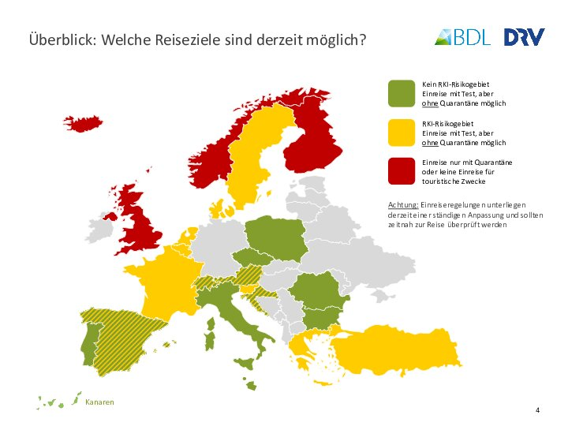

COVID-19 ist eine erstmalig 2019 aufgetretene Atemwegserkrankung, die durch ein Coronavirus (SARS-CoV-2) verursacht wird. Die zur Pandemie erklärte Krankheit wird von Mensch zu Mensch übertragen, vor allem über Sekrete der Atemwege. Nach einer Infektion können innerhalb von 14 Tagen Symptome auftreten, die auf COVID-19 hinweisen. Insbesondere sind dies Fieber, neuaufgetretener Husten, Geruchs- oder Geschmacksverlust, Atemnot.
Wenn Sie sich innerhalb von 10 Tagen vor Einreise in einem Risikogebiet* (einschließlich Hochinzidenzoder Virusvariantengebiet*) aufgehalten haben, sind Sie verpflichtet, sich vorab über das Einreiseportal zu registrieren https://www.einreiseanmeldung.de (bei Einreise aus Risikogebieten* bis 48h nach Einreise möglich), eine Bestätigung darüber ist bei Einreise mit sich zu führen und auf Anforderung vorzulegen.
Flugeinreisende beachten bitte die grundsätzliche Test-, Impf- oder Genesenennachweispflicht vor Abflug, unabhängig davon, ob sie sich in einem Risikogebiet* aufgehalten haben. Diese müssen dem Beförderer vorgelegt, bei Einreise zum Zweck grenzpolizeilicher Kontrolle mitgeführt und auf Anforderung vorgelegt werden. Flugeinreisende nach Voraufenthalt in Risikogebieten* müssen diesen Nachweis zusätzlich über das Einreiseportal hochladen. Bei Voraufenthalt in Hochinzidenz- bzw. Virus-variantengebieten*, muss bei Einreise ein Test-nachweis vorliegen (aus Hochinzidenzgebieten auch Impf-/ Genesenennachweis möglich): max. 48h (Antigentest)/max. 72h (PCR) alt bzw. max. 24h (Antigentest)/ max. 72h (PCR) alt. Grundsätzlich muss der Nachweis bei Nutzung eines Transportmittels dem Beförderer vor Beförderung vorgelegt werden.
Bei Voraufenthalt in Risikogebieten*, die keine Virusvariantengebiete sind, ist eine 10-tägige Quarantäne verpflichtend; diese ist vorzeitig beendbar sobald ein Test-, Impf- oder Genesenennachweis an das Einreiseportal übermittelt wurde. Bei Einreise aus Hochinzidenz- bzw. Virusvariantengebieten* ist eine 10- bzw. 14-tägige Quarantäne verpflichtend. Bei Hochinzidenzgebieten* ist diese vorzeitig beendbar bei Übermittlung eines Impf- oder Genesenennachweises an das Einreiseportal oder durch eine Testung frühestens 5 Tage nach Einreise. Dies ist nicht möglich bei Einreise aus Virusvariantengebieten*.
Beachten Sie die Hinweise der lokalen Behörden. Das Auswärtige Amt warnt vor nicht notwendigen, touristischen Reisen in eine Vielzahl an Ländern.
